حقوق الصور
الصور المستخدمة في الموقع مرخّصة برخص المشاع الإبداعي، وهذه أسماء أصحابها وروابط الرخص.
Photos on this site are used under Creative Commons licences. Authors and licences below.
| القسم | المصوّر | الرخصة | |
|---|---|---|---|
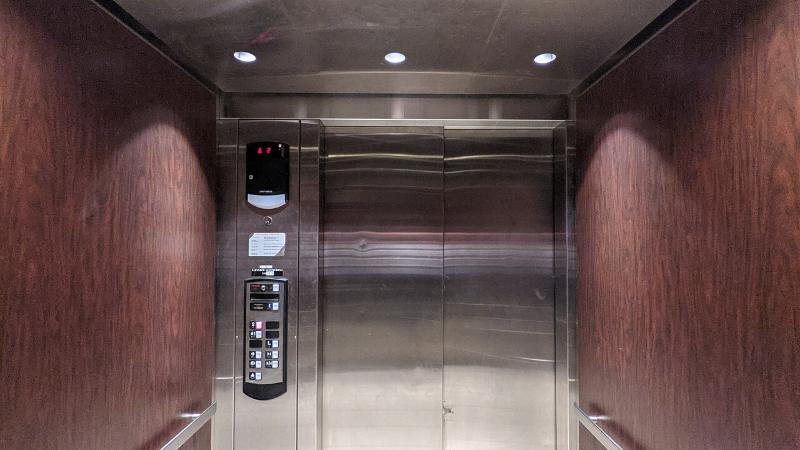 | بيع مصاعد جديدة New elevator sales | Baron Maddock | CC BY 4.0 |
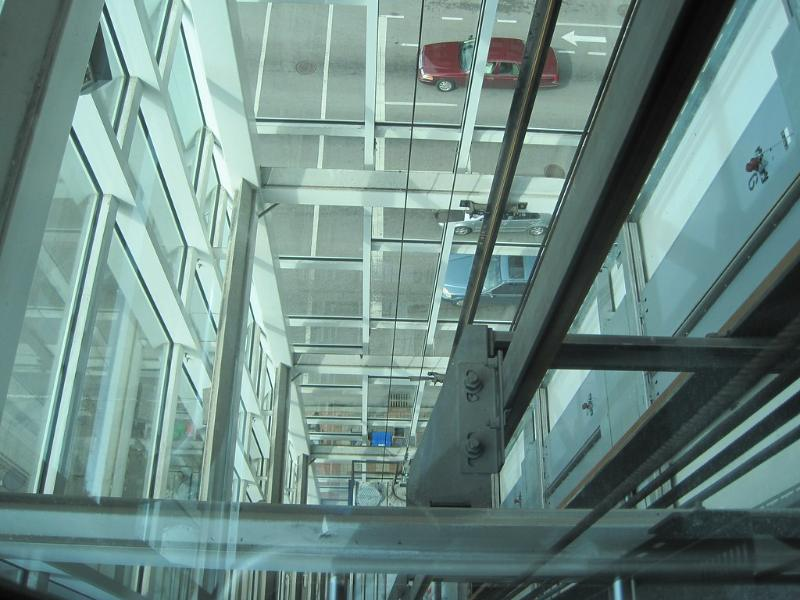 | التركيب Installation | local louisville | CC BY 2.0 |
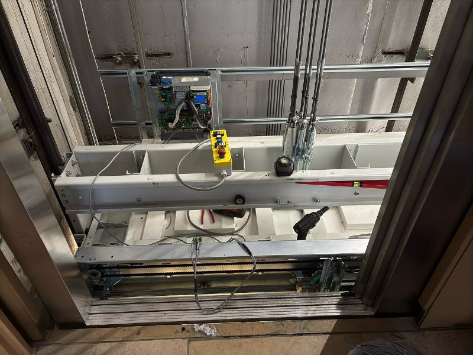 | الصيانة الدورية Routine maintenance | Killarnee | CC BY-SA 4.0 |
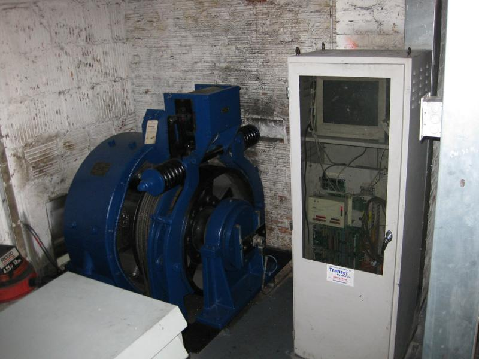 | التصليح والأعطال Repairs | zombieite | CC BY 2.0 |
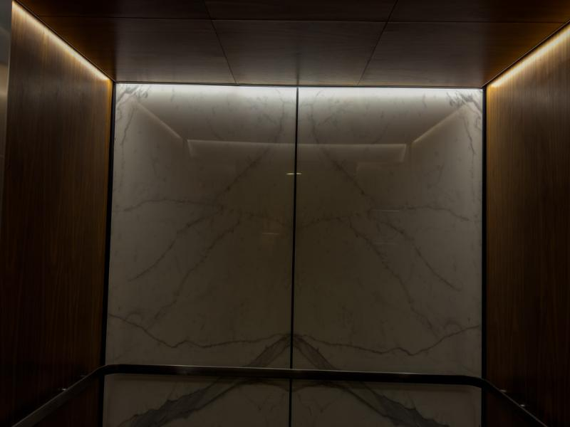 | تحديث المصاعد القديمة Modernisation | jjes84 | CC BY 2.0 |
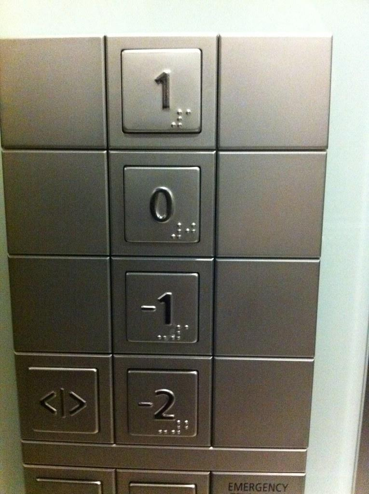 | قطع الغيار Spare parts | Simon Job | CC BY 2.0 |
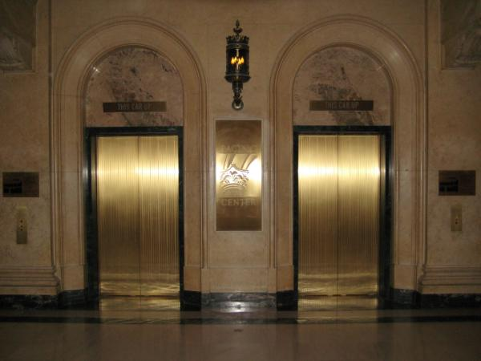 | مصاعد الركاب Passenger | ricardodiaz11 | CC BY 2.0 |
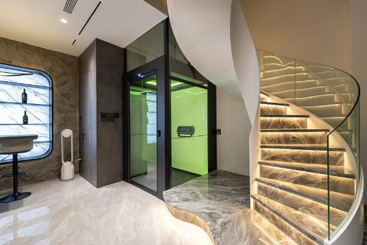 | مصاعد المنازل والفلل (وصورة الواجهة) Home & villa (and the hero photo) | MantiFirero | CC BY-SA 4.0 |
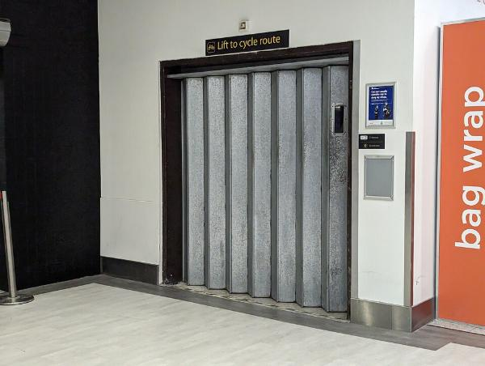 | مصاعد الشحن Freight | David Wheatley | CC BY-SA 4.0 |
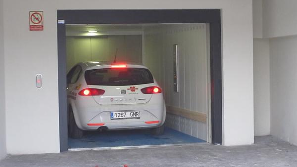 | مصاعد السيارات Car elevators | Spanish Coches | CC BY 2.0 |
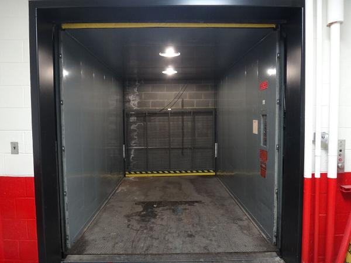 | مصاعد المستشفيات Hospital | Dieselducy | CC BY-SA 3.0 |
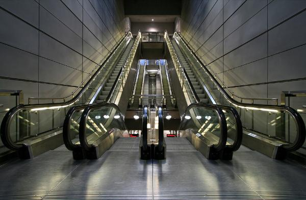 | السلالم الكهربائية Escalators | Stig Nygaard from Copenhagen, Denmark | CC BY 2.0 |
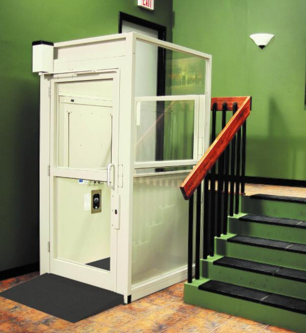 | لذوي الاحتياجات الخاصة Accessibility | Tas1summer | CC BY-SA 4.0 |
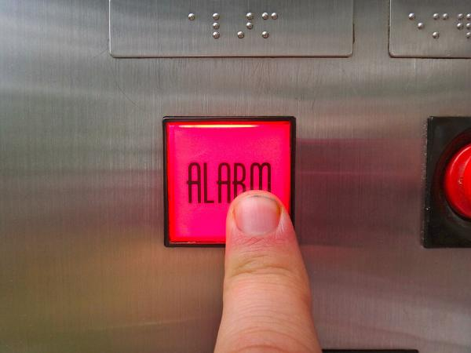 | أنظمة الأمان Safety systems | Dieselducy, Andrew R | CC BY-SA 3.0 |